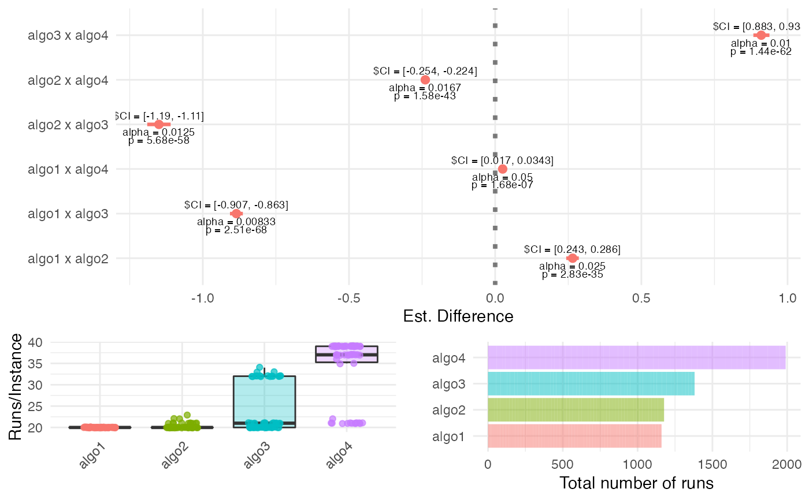

run_experiment.RdDesign and run a full experiment - calculate the required number of
instances, run the algorithms on each problem instance using the iterative
approach based on optimal sample size ratios, and return the results of the
experiment. This routine builds upon calc_instances() and calc_nreps(),
so refer to the documentation of these two functions for details.
run_experiment(instances, algorithms, d, se.max, power = 0.8, sig.level = 0.05, power.target = "mean", dif = "simple", comparisons = "all.vs.all", alternative = "two.sided", test = "t.test", method = "param", nstart = 20, nmax = 100 * length(algorithms), force.balanced = FALSE, ncpus = 2, boot.R = 499, seed = NULL, save.partial.results = NA, load.partial.results = NA, save.final.result = NA)
| instances | list object containing the definitions of the
available instances. This list may (or may not) be exhausted in the
experiment. To estimate the number of required instances,
see |
|---|---|
| algorithms | a list object containing the definitions of all algorithms.
See Section |
| d | minimally relevant effect size (MRES), expressed as a standardized
effect size, i.e., "deviation from H0" / "standard deviation".
See |
| se.max | desired upper limit for the standard error of the estimated
difference between pairs of algorithms. See Section
|
| power | (desired) test power. See |
| sig.level | family-wise significance level (alpha) for the experiment.
See |
| power.target | which comparison should have the desired |
| dif | type of difference to be used. Accepts "perc" (for percent differences) or "simple" (for simple differences) |
| comparisons | type of comparisons being performed. Accepts "all.vs.first"
(in which cases the first object in |
| alternative | type of alternative hypothesis ("two.sided" or
"less" or "greater"). See |
| test | type of test to be used ("t.test", "wilcoxon" or "binomial") |
| method | method to use for estimating the standard errors. Accepts "param" (for parametric) or "boot" (for bootstrap) |
| nstart | initial number of algorithm runs for each algorithm.
See Section |
| nmax | maximum number of runs to execute on each instance (see
|
| force.balanced | logical flag to force the use of balanced sampling for the algorithms on each instance |
| ncpus | number of cores to use |
| boot.R | number of bootstrap resamples to use (if |
| seed | seed for the random number generator |
| save.partial.results | should partial results be saved to files? Can be
either |
| load.partial.results | should partial results be loaded from files? Can
be either |
| save.final.result | should the final results be saved to file? Can be
either |
a list object containing the following fields:
Configuration - the full input configuration (for reproducibility)
data.raw - data frame containing all observations generated
data.summary - data frame summarizing the experiment.
N - number of instances sampled
N.star - number of instances required
total.runs - total number of algorithm runs performed
instances.sampled - names of the instances sampled
Underpowered - flag: TRUE if N < N.star
Parameter instances must contain a list of instance objects, where
each field is itself a list, as defined in the documentation of function
calc_nreps(). In short, each element of instances is an instance, i.e.,
a named list containing all relevant parameters that define the problem
instance. This list must contain at least the field instance$FUN, with the
name of the problem instance function, that is, a routine that calculates
y = f(x). If the instance requires additional parameters, these must also be
provided as named fields.
An additional field, "instance$alias", can be used to provide the instance
with a unique identifier (e.g., when using an instance generator).
Object algorithms is a list in which each component is a named
list containing all relevant parameters that define an algorithm to be
applied for solving the problem instance. In what follows algorithms[[k]]
refers to any algorithm specified in the algorithms list.
algorithms[[k]] must contain an algorithms[[k]]$FUN field, which is a
character object with the name of the function that calls the algorithm; as
well as any other elements/parameters that algorithms[[k]]$FUN requires
(e.g., stop criteria, operator names and parameters, etc.).
The function defined by the routine algorithms[[k]]$FUN must have the
following structure: supposing that the list in algorithms[[k]] has
fields algorithm[[k]]$FUN = "myalgo", algorithms[[k]]$par1 = "a" and
algorithms[[k]]$par2 = 5, then:
myalgo <- function(par1, par2, instance, ...){
#
# <do stuff>
#
return(results)
}
That is, it must be able to run if called as:
# remove '$FUN' and '$alias' field from list of arguments
# and include the problem definition as field 'instance'
myargs <- algorithm[names(algorithm) != "FUN"]
myargs <- myargs[names(myargs) != "alias"]
myargs$instance <- instance
# call function
do.call(algorithm$FUN,
args = myargs)
The algorithm$FUN routine must return a list containing (at
least) the performance value of the final solution obtained, in a field named
value (e.g., result$value) after a given run. In general it is easier to
write a small wrapper function around existing implementations.
In the general case the initial number of observations / algorithm /
instance (nstart) should be relatively high. For the parametric case
we recommend 10~15 if outliers are not expected, and 30~40 (at least) if that
assumption cannot be made. For the bootstrap approach we recommend using at
least 15 or 20. However, if some distributional assumptions can be
made - particularly low skewness of the population of algorithm results on
the test instances), then nstart can in principle be as small as 5 (if the
output of the algorithm were known to be normal, it could be 1).
In general, higher sample sizes are the price to pay for abandoning
distributional assumptions. Use lower values of nstart with caution.
Parameter dif informs the type of difference in performance to be used
for the estimation (\(\mu_a\) and \(\mu_b\) represent the mean
performance of any two algorithms on the test instance, and \(mu\)
represents the grand mean of all algorithms given in algorithms):
If dif == "perc" and comparisons == "all.vs.first", the estimated
quantity is:
\(\phi_{1b} = (\mu_1 - \mu_b) / \mu_1 = 1 - (\mu_b / \mu_1)\).
If dif == "perc" and comparisons == "all.vs.all", the estimated
quantity is:
\(\phi_{ab} = (\mu_a - \mu_b) / \mu\).
If dif == "simple" it estimates \(\mu_a - \mu_b\).
If the parameter `` is set to either Wilcoxon or `Binomial`, this
routine approximates the number of instances using the ARE of these tests
in relation to the paired t.test:
n.wilcox = n.ttest / 0.86 = 1.163 * n.ttest
n.binom = n.ttest / 0.637 = 1.570 * n.ttest
F. Campelo, F. Takahashi: Sample size estimation for power and accuracy in the experimental comparison of algorithms. Journal of Heuristics 25(2):305-338, 2019.
P. Mathews. Sample size calculations: Practical methods for engineers and scientists. Mathews Malnar and Bailey, 2010.
A.C. Davison, D.V. Hinkley: Bootstrap methods and their application. Cambridge University Press (1997)
E.C. Fieller: Some problems in interval estimation. Journal of the Royal Statistical Society. Series B (Methodological) 16(2), 175–185 (1954)
V. Franz: Ratios: A short guide to confidence limits and proper use (2007). https://arxiv.org/pdf/0710.2024v1.pdf
D.C. Montgomery, C.G. Runger: Applied Statistics and Probability for Engineers, 6th ed. Wiley (2013)
D.J. Sheskin: Handbook of Parametric and Nonparametric Statistical Procedures, 4th ed., Chapman & Hall/CRC, 1996.
# Example using four dummy algorithms and 100 dummy instances. # See [dummyalgo()] and [dummyinstance()] for details. # Generating 4 dummy algorithms here, with means 15, 10, 30, 15 and standard # deviations 2, 4, 6, 8. algorithms <- mapply(FUN = function(i, m, s){ list(FUN = "dummyalgo", alias = paste0("algo", i), distribution.fun = "rnorm", distribution.pars = list(mean = m, sd = s))}, i = c(alg1 = 1, alg2 = 2, alg3 = 3, alg4 = 4), m = c(15, 10, 30, 15), s = c(2, 4, 6, 8), SIMPLIFY = FALSE) # Generate 100 dummy instances with centered exponential distributions instances <- lapply(1:100, function(i) {rate <- runif(1, 1, 10) list(FUN = "dummyinstance", alias = paste0("Inst.", i), distr = "rexp", rate = rate, bias = -1 / rate)}) my.results <- run_experiment(instances, algorithms, d = .5, se.max = .1, power = .9, sig.level = .05, power.target = "mean", dif = "perc", comparisons = "all.vs.all", ncpus = 1, seed = 1234)#> CAISEr running #> ----------------------------- #> Required number of instances: 58 #> Available number of instances: 100 #> Using 1 cores. #> ----------------------------- #> Sampling algorithms on instance Inst.28 : . #> Sampling algorithms on instance Inst.80 : . #> Sampling algorithms on instance Inst.22 : . #> Sampling algorithms on instance Inst.9 : . #> Sampling algorithms on instance Inst.5 : . #> Sampling algorithms on instance Inst.38 : . #> Sampling algorithms on instance Inst.16 : . #> Sampling algorithms on instance Inst.4 : .. #> Sampling algorithms on instance Inst.86 : .. #> Sampling algorithms on instance Inst.90 : .. #> Sampling algorithms on instance Inst.70 : .. #> Sampling algorithms on instance Inst.79 : .. #> Sampling algorithms on instance Inst.78 : .. #> Sampling algorithms on instance Inst.14 : .. #> Sampling algorithms on instance Inst.56 : .. #> Sampling algorithms on instance Inst.62 : .. #> Sampling algorithms on instance Inst.93 : .. #> Sampling algorithms on instance Inst.84 : .. #> Sampling algorithms on instance Inst.21 : .. #> Sampling algorithms on instance Inst.40 : .. #> Sampling algorithms on instance Inst.92 : .. #> Sampling algorithms on instance Inst.67 : .. #> Sampling algorithms on instance Inst.96 : .. #> Sampling algorithms on instance Inst.66 : .. #> Sampling algorithms on instance Inst.47 : .. #> Sampling algorithms on instance Inst.81 : .. #> Sampling algorithms on instance Inst.48 : .. #> Sampling algorithms on instance Inst.3 : .. #> Sampling algorithms on instance Inst.41 : .. #> Sampling algorithms on instance Inst.32 : .. #> Sampling algorithms on instance Inst.42 : .. #> Sampling algorithms on instance Inst.43 : .. #> Sampling algorithms on instance Inst.2 : .. #> Sampling algorithms on instance Inst.54 : .. #> Sampling algorithms on instance Inst.49 : .. #> Sampling algorithms on instance Inst.99 : .. #> Sampling algorithms on instance Inst.51 : . #> Sampling algorithms on instance Inst.6 : . #> Sampling algorithms on instance Inst.77 : . #> Sampling algorithms on instance Inst.29 : . #> Sampling algorithms on instance Inst.71 : . #> Sampling algorithms on instance Inst.85 : . #> Sampling algorithms on instance Inst.57 : . #> Sampling algorithms on instance Inst.8 : . #> Sampling algorithms on instance Inst.26 : . #> Sampling algorithms on instance Inst.17 : . #> Sampling algorithms on instance Inst.58 : . #> Sampling algorithms on instance Inst.91 : . #> Sampling algorithms on instance Inst.60 : . #> Sampling algorithms on instance Inst.76 : . #> Sampling algorithms on instance Inst.98 : . #> Sampling algorithms on instance Inst.35 : . #> Sampling algorithms on instance Inst.72 : . #> Sampling algorithms on instance Inst.94 : . #> Sampling algorithms on instance Inst.73 : . #> Sampling algorithms on instance Inst.50 : .. #> Sampling algorithms on instance Inst.10 : .. #> Sampling algorithms on instance Inst.45 : ..#> #==================================== #> CAISEr object: #> Number of instances sampled: 58 #> Number of instances required: 58 #> Adequate power: TRUE #> Total runs of algo1 : 1160 #> Total runs of algo2 : 1162 #> Total runs of algo3 : 1543 #> Total runs of algo4 : 2118 #> #==================================== #> Pairwise comparisons of interest: #> Test: t.test #> H1: two.sided #> Comparisons: all.vs.all #> Alpha (FWER): 0.05 #> Power target: mean #> Desired power: 0.9 #> #==================================== #> Tests using Holm's step-down procedure: #> #> Test 1 : algo2 - algo3 #> H0: mean = 0 #> alpha = 0.008333 #> p-value = 5.048e-74 #> Est. mean = -1.183 #> CI{1-alpha} = [ -1.206 -1.159 ] #> d = -18.38051 #> #> Test 2 : algo1 - algo3 #> H0: mean = 0 #> alpha = 0.01 #> p-value = 6.096e-61 #> Est. mean = -0.9177 #> CI{1-alpha} = [ -0.9474 -0.888 ] #> d = -10.8064 #> #> Test 3 : algo1 - algo2 #> H0: mean = 0 #> alpha = 0.0125 #> p-value = 1.62e-52 #> Est. mean = 0.2648 #> CI{1-alpha} = [ 0.2531 0.2765 ] #> d = 7.6582 #> #> Test 4 : algo3 - algo4 #> H0: mean = 0 #> alpha = 0.01667 #> p-value = 1.528e-46 #> Est. mean = 0.9652 #> CI{1-alpha} = [ 0.913 1.017 ] #> d = 5.98517 #> #> Test 5 : algo2 - algo4 #> H0: mean = 0 #> alpha = 0.025 #> p-value = 1.917e-19 #> Est. mean = -0.2173 #> CI{1-alpha} = [ -0.2543 -0.1803 ] #> d = -1.776516 #> #> Test 6 : algo1 - algo4 #> H0: mean = 0 #> alpha = 0.05 #> p-value = 0.0002322 #> Est. mean = 0.04752 #> CI{1-alpha} = [ 0.02331 0.07173 ] #> d = 0.5160491 #> #====================================plot(my.results)